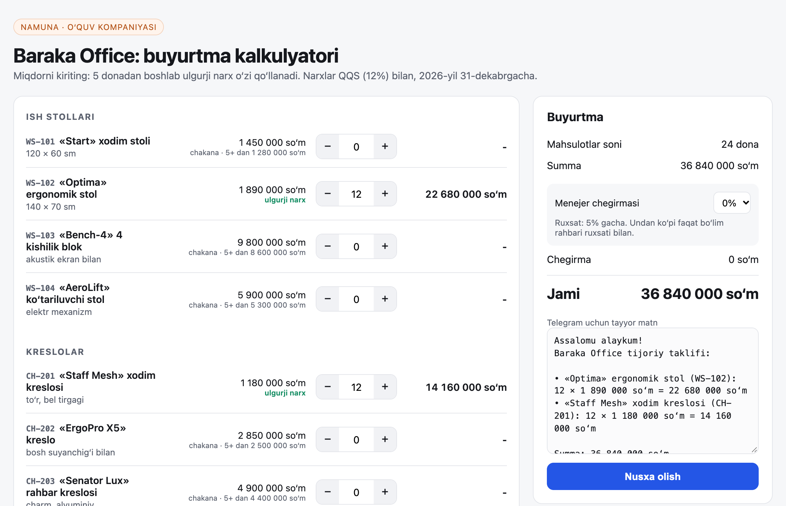

Praktikum 3.0, birinchi dars. 21 va 22-noyabr 2026
Bu dastur foyda qatori haqida: bitta jarayon, o‘lchangan natija.
Noutbuklarni oching. 30 daqiqada o‘z biznesingiz uchun ishlaydigan narsa.

Sizning mahsulotlaringiz, sizning narxlaringiz.
Miqdorni o‘zgartirsangiz, jami o‘zi hisoblanadi. Telegram uchun matn ham tayyor.
Raqamni tekshirmasdan ishonmang. So‘rang: «Qanday hisoblading? Formulani ko‘rsat.»